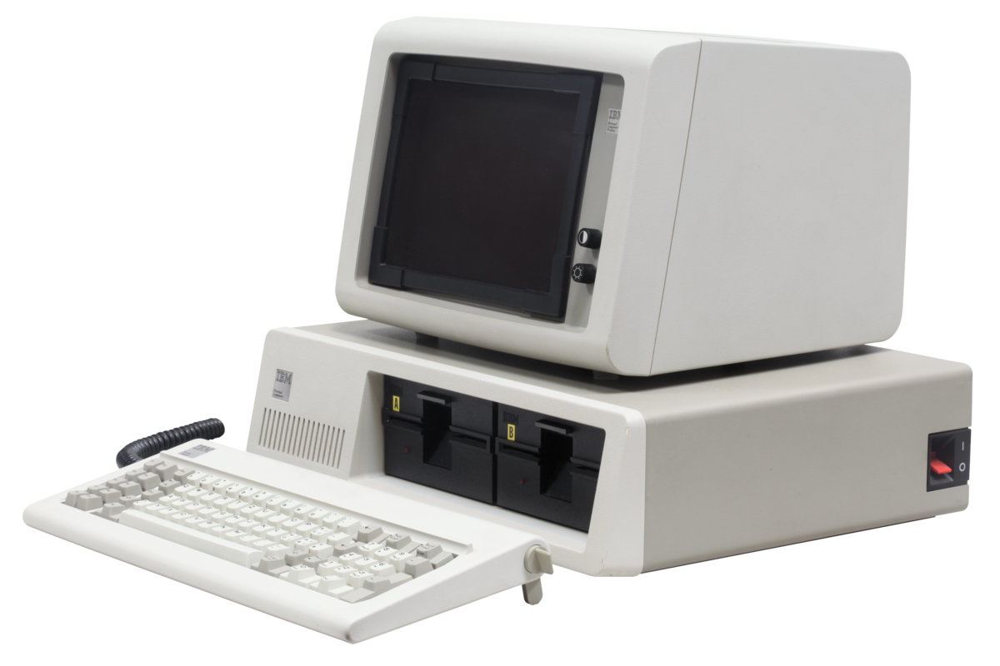

Ambition and thirst for power have a part but greed and greed alone is the reason for a man wanting to swell his ward.
Charles Ranlett Flint was born January 24, 1850 in Maine and later moved to New York City with his family.
In 1868, Charles Flint graduated from the Polytechnic Institute (New York University Tandon school of engineering), later in 1871, Charles Flint would later work in the shipping business under Gilchrest, Flint and Co., which would later become W.R. Grace and Co.
In 1876, Charles Ranlett Flint served as the Chilean consul in New York City. During that time, he was also the consul general for the U.S and Nicaragua and Costa Rica.
Charles Flint merged multiple companies in 1892 to from U.S Rubber. In 1899, he merged more companies like Adams Chewing Gum, Chiclets, Dentyne, and Beemans to form American Chicle. During the same year, he also merged more companies to form American Woolen.
In 1911, he formed The Tabulating Machine Company after stock acquisition of four companies. The Tabulating Machine Company would later become International Business Machines(IBM). Charles Ranlett Flint would later serve as the board of directors until 1930. Charles Flint would later retire the same year. IBM would later revolutionize the computing industry.

In the early days of The Tabulating Machine Company, they mostly made calculating machines, time recorders and mehcanical punch card machines for the US census. Around the 1920s, they changed the name to International Business Machines and created the first public address system for schools, the revolutionary announcment system for american schools.
During the 1930s and 40s, IBM would produce electric typewriters, data machines and the first completely electronic computing machine in 1943. A year later, IBM came out with the "IBM Mark 1", which is The Automatic Sequence Controlled Calculator and is the first fully functional computer based on electromechanical switches.
Throughout the 50s and 70s, IBM continued making machines for businesses and data management devices. It wouldn't be Until 1981 that IBM would create the first personal computer. This would become the model for modern computers and would be followed by competitors. For the next couple years, IBM would focus on it's business divison as the demand for personal computers would go down. In 2005, IBM would sell their personal computing divison to Lenovo and would focus on it's business division.
